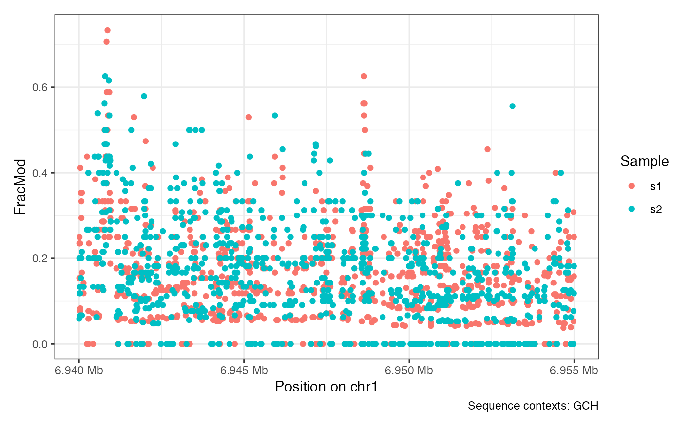
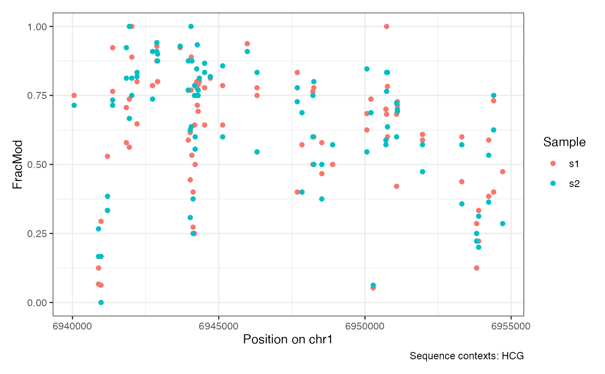
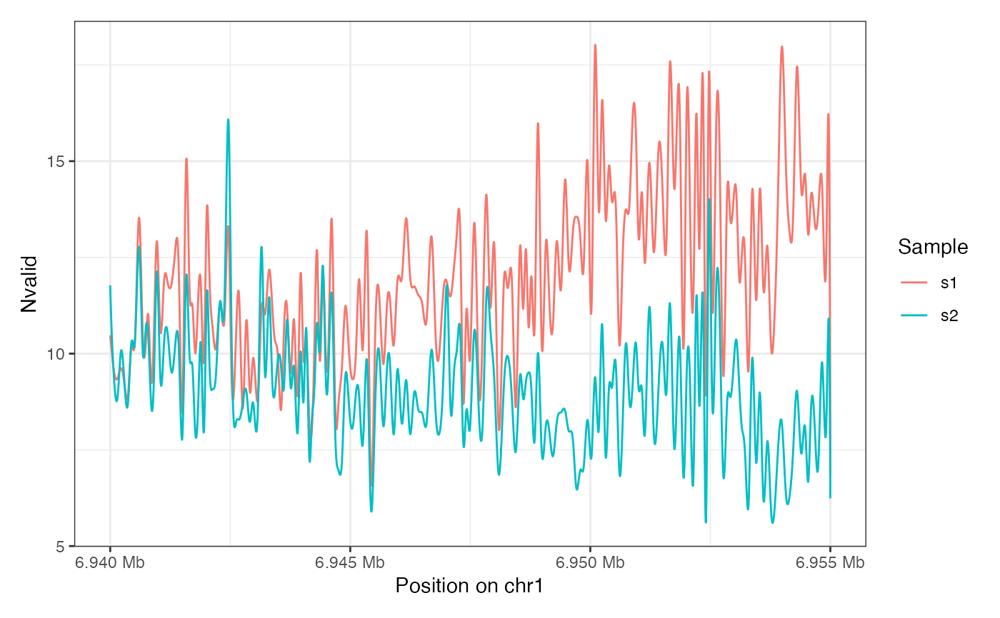
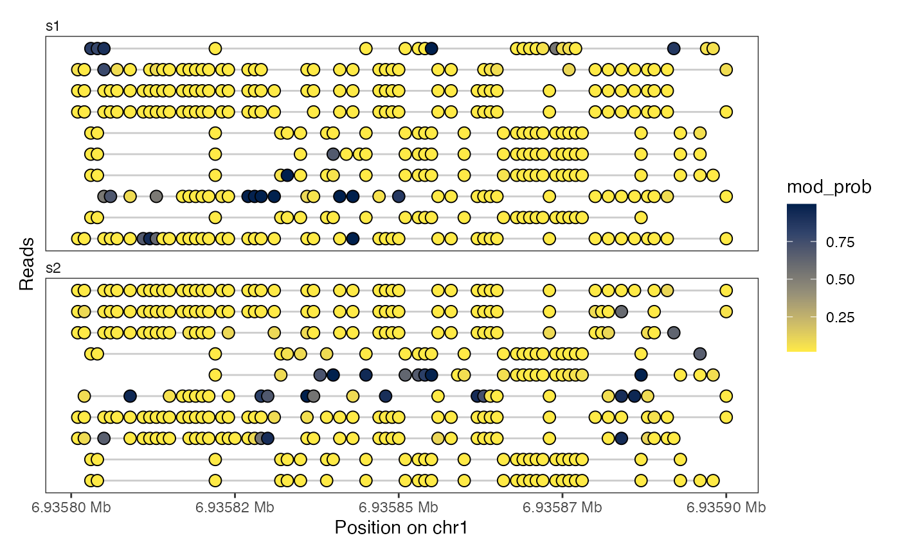
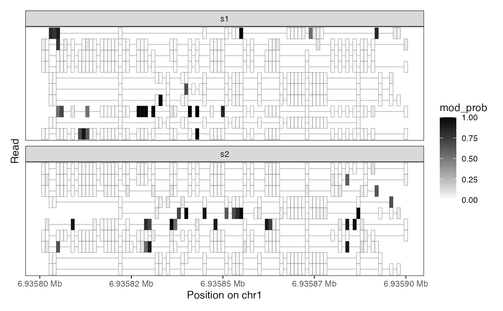
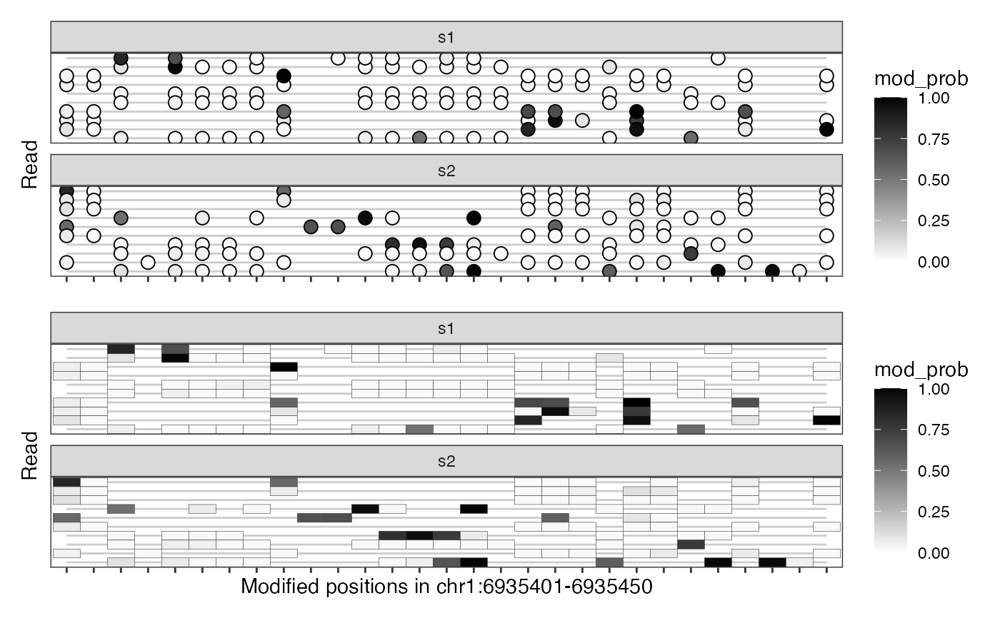

R/plotRegion.R
plotRegion.RdThis function will visualize read-level or collapsed single-molecule
footprinting data, such as data imported using readModkitExtract
or readBedMethyl.
plotRegion(
se,
region = NULL,
tracks.reads = NULL,
tracks.summary = list(FracMod = "Point"),
modbaseSpace = FALSE,
sequence.context = NULL
)A SummarizedExperiment object
with read-level or collapsed single-molecule footprinting data (positions
in rows and reads or samples in columns).
A GRanges object with a single
region. Only data from se overlapping this region will be plotted.
Alternatively, the region can be specified as a character scalar (e.g.
"chr1:1200-1300") that can be coerced into a GRanges object. If
NULL (the default), all the data on the first sequence in
se will be visualized.
A named list where the names correspond to assay names
of read-level assays in se and the values are character vectors
with the plot types to make for each assay. Currently supported plot
types are:
"Lollipop": Lollipop plot (filled circles with the
color representing the values in the assay).
"Heatmap": Heatmap plot (tiles with the color
represeting the values in the assay).
If NULL, do not plot any read-level tracks.
A named list where the names correspond to assay names
of summarized data in se and the values are character vectors with
plot types to make for each assay. Currently supported plot types are:
Point: A point plot displaying values in the assay.
Smooth: A smoothed line plot displaying values in the
assay.
PointSmooth: A point and smoothed line plot displaying
values in the assay.
If NULL, do not plot any summary data tracks.
A special case is the track name "FracMod": If se does not
contain an assay of that name, but "Nmod" and "Nvalid"
assays are available, "FracMod" will be calculated from
assay(se, "Nmod") / assay(se, "Nvalid").
A logical scalar. If TRUE, the x-axis will be
shown in the space of modified bases and contain only the positions at
which there are modified bases in the data without any gaps between them.
If FALSE, the x-axis will show the genomic coordinate on which
the modified bases are typically irregularly spaced.
A character vector with sequence context(s)
to plot. Only positions that match one of the provided sequence
contexts will be included in the plot. Sequence contexts can be provided
using IUPAC redundancy codes. The sequence contexts of modified bases are
obtained from rowData(se)$sequence.context and thus requires that
se contains the appropriate information, for example by setting
the sequence.context and sequence.reference arguments of
readBedMethyl when it was generated, or by adding it using
seqContext.
A ggplot object with tracks selected by
tracks.reads and tracks.summary.
readModkitExtract and readBedMethyl for
reading read-level and summarized footprinting data.
# summarized data (5mC)
bmfiles <- system.file("extdata",
c("modkit_pileup_1.bed.gz", "modkit_pileup_2.bed.gz"),
package = "footprintR")
reffile <- system.file("extdata", "reference.fa.gz", package = "footprintR")
seA <- readBedMethyl(bmfiles, sequence.context = 3, sequence.reference = reffile)
plotRegion(seA, region = "chr1:6940000-6955000", sequence.context = "GCH")

plotRegion(seA, region = "chr1:6940000-6955000", sequence.context = "HCG")

plotRegion(seA, region = "chr1:6940000-6955000",
tracks.summary = list(Nvalid = "Smooth"))

# read-level data (6mA)
extractfiles <- system.file("extdata",
c("modkit_extract_rc_6mA_1.tsv.gz",
"modkit_extract_rc_6mA_2.tsv.gz"),
package = "footprintR")
seB <- readModkitExtract(extractfiles, modbase = "a", filter = "modkit")
plotRegion(seB, region = "chr1:6935800-6935900",
tracks.summary = NULL,
tracks.reads = list(mod_prob = "Lollipop"))

plotRegion(seB, region = "chr1:6935800-6935900",
tracks.summary = NULL,
tracks.reads = list(mod_prob = "Heatmap"))

plotRegion(seB, region = "chr1:6935400-6935450",
tracks.summary = NULL,
tracks.reads = list(mod_prob = c("Lollipop", "Heatmap")),
modbaseSpace = TRUE)
